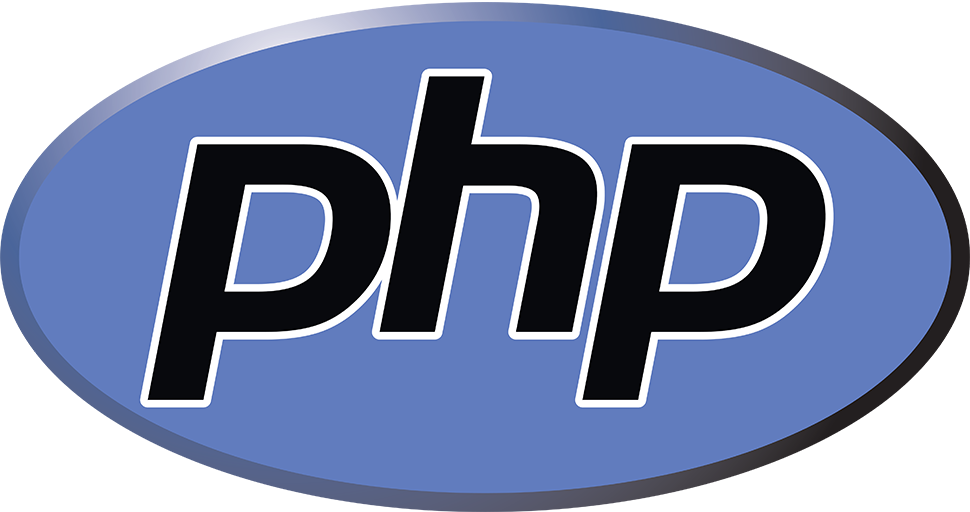
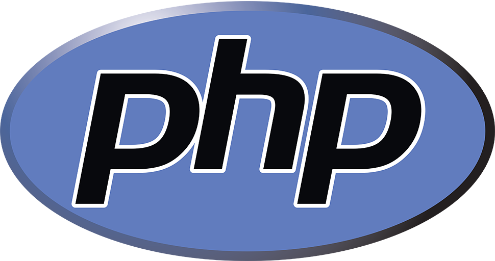

Are you
Looking
for a web
developer?

I'm Migs!
Let me tell you
how i became a
full stack
web developer
I'm a sales professional with a background in fitness instruction and financial advising, particularly in insurance at AXA Life, Philam Life, and FWD.
Despite my experience, financial setbacks from an investment loss and emergencies occurred. Currently, I'm in the process of recovering and essentially starting anew.
This led me to pursue a new career as a web developer—a long-held dream. I self-studied HTML, CSS, and PHP wtih MySQL.
 

In 2021, I created a fully functional web application, a point-of-sale system for my refreshment store.
Recently, I discovered KodeGo, which inspired me to seek more confidence in the projects I undertake. As a result, I enrolled in their boot camp. I expanded my knowledge by learning JavaScript to enhance user experiences and delved into React, a library for single-page applications. Moreover, I gained valuable experience in team coordination through our mini and capstone projects. Dealing with debugging errors and meeting project deadlines brought about significant pressure. Nonetheless, our team successfully completed and deployed our projects on GitHub.

A dynamic personality assessment tool that engages users in a series of questions to evaluate their personality traits and preferences. Upon completing the assessment, the system will process their answers and generate a personalized result.
A Coffee Drinks Menu with a cart for selecting drinks. It includes a screenshot feature for capturing your cart and saving it to your local folder, making it easy to share on our Facebook Page.
Currently, I am using React to recreate the PHP project I previously developed.
Finding a job is challenging for someone like me, who lacks a bachelor's degree and has pursued self-study and a boot camp instead. Nevertheless, I hold onto hope that an opportunity will arise for individuals in a similar situation. Despite being 39 years old, I am determined to achieve my dream of becoming a proficient developer, so I am diligently studying and learning for my dream life when I retire.
Let's build your desired website or application!